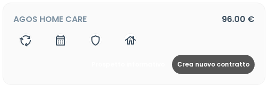
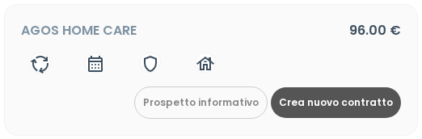

I bottoni "Prospetto informativo" e "Crea nuovo contratto" erano visivamente identici. Ora hanno gerarchia chiara.
I due bottoni ora hanno gerarchia visiva corretta. "Crea nuovo contratto" domina, "Prospetto informativo" è chiaramente secondario.
Nella pagina di selezione del contratto, c'erano due bottoni accanto a ogni prodotto: uno per scaricare il prospetto informativo (PDF) e uno per creare un nuovo contratto. Entrambi avevano lo stesso aspetto visivo scuro, rendendo difficile capire quale fosse l'azione principale.
Abbiamo reso il bottone "Prospetto informativo" più leggero (bordo grigio, sfondo trasparente, testo piccolo) così l'occhio va subito su "Crea nuovo contratto", che è l'azione principale.

Entrambi i bottoni scuri — nessuna gerarchia

"Prospetto" leggero, "Crea contratto" prominente
Il primo tentativo aveva reso il bottone "Prospetto" completamente invisibile (testo bianco su sfondo bianco) a causa di un conflitto con il tema personalizzato. Risolto aggiungendo uno stile dedicato nel tema.
Server: Athena (Cloudways) — 164.92.133.148
Path: /home/1174648.cloudwaysapps.com/estendonexumathena/public_html
URL: estendo.sel.re/service/select
Scenario: Post-fix validation
Iterazioni: 2 (prima btn-outline invisibile, poi fix CSS)
Verdict: FIXED ✅
File 1: resources/views/components/service/service-select.blade.php
File 2: resources/views/components/layouts/head-style.blade.php
Causa del bug iniziale: Il selettore #app-body span nel tema forzava color: #fff sui bottoni, rendendo il testo di btn-outline-secondary bianco su sfondo trasparente. Risolto con selettore a specificità (0,1,2,0) che vince sul generico.